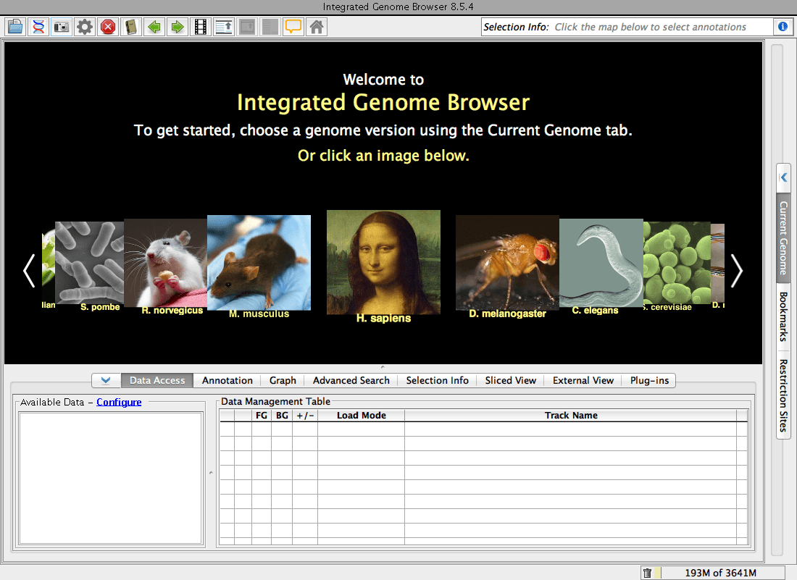
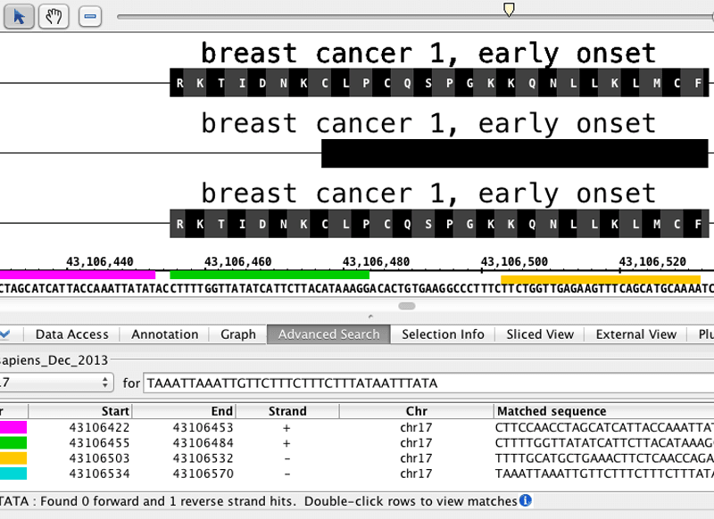
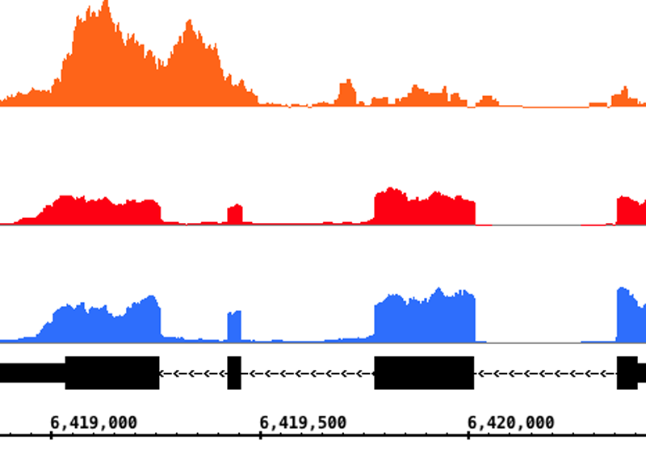
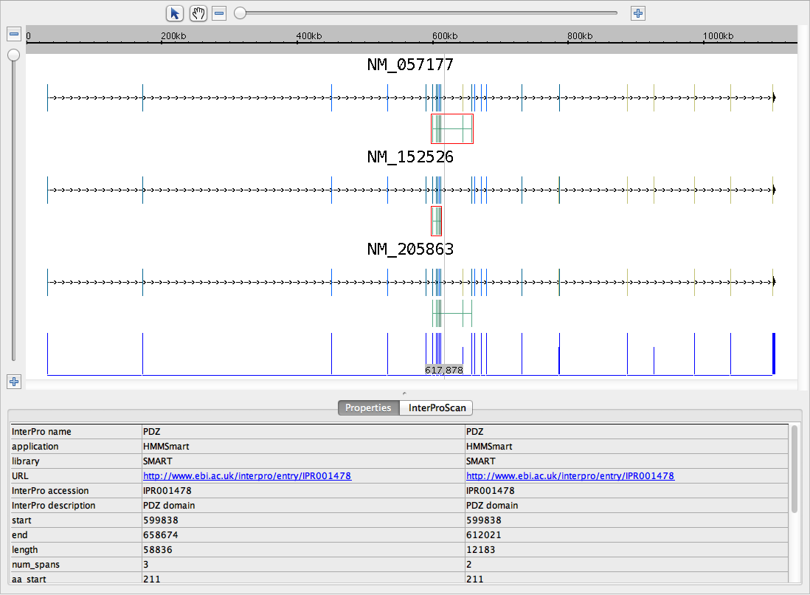

Integrated Genome Browser
Visualization for genome-scale data
-

IGB start screen.
-

Close-up on BRCA1, with PCR primers.
-

Right-click to run BLAST.
-

RNA-Seq coverage graphs highlight alternative splicing.
-
Sliced view trims introns; makes gene structures easier to understand.
-

Use ProtAnnot to search InterProt for conserved motifs, find out how splicing changes gene function.
What is IGB?
IGB is a fast, free, and highly customizable genome browser you can use to view and explore big genomic datasets. IGB runs on your desktop and can load data from your local files and also from the internet.
Need help getting started?
If you're new to IGB, contact us to request a demo. You can also watch IGB videos on the IGB YouTube Channel or visit the IGB User's Guide.
Support IGB!
Help improve IGB by suggesting new features or reporting problems using this this form. You can also email Ann Loraine, who will forward your comments to the team.